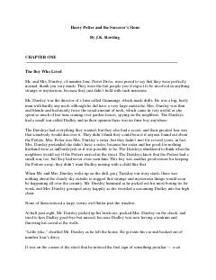

B1Yosh sehrgar Harri Potterning sehrli dunyodagi birinchi sarguzashtlari.
Bu kitob yosh Harry Potterning sehrgar ekanligini bilib, Hogvarts sehrgarlik maktabiga o'qishga ketishi haqida. U do'stlar orttiradi, sirlarni kashf etadi va yovuz kuchlar bilan to'qnashadi. Kitob dunyo bo'ylab millionlab o'quvchilarni maftun etgan mashhur fantastik roman seriyasining birinchi qismidir.